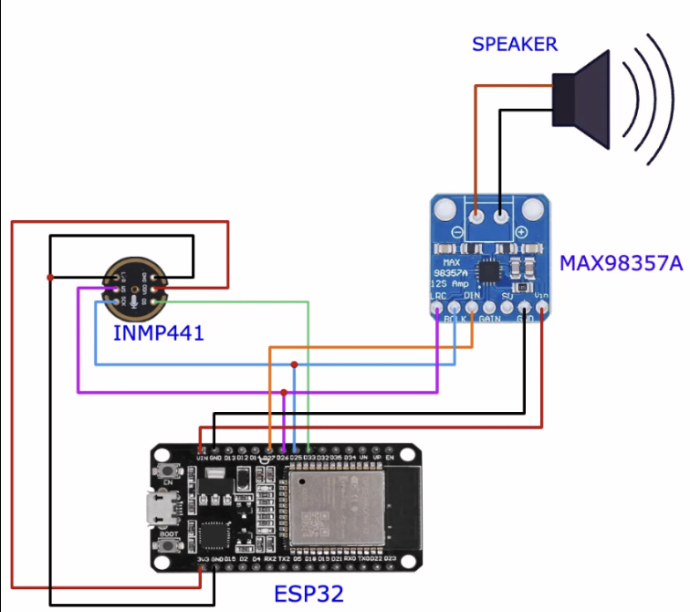
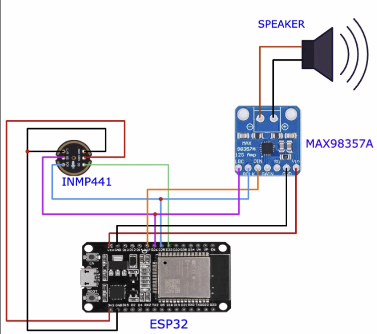
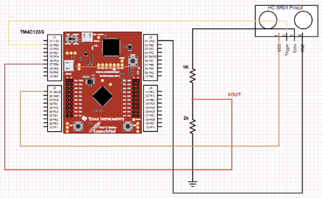
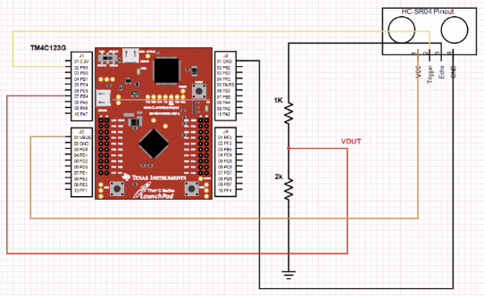

I am a .
Solves the problem rockets have when sending data back to Earth, long-range wireless communication to track your vehicle. My Telemetry System (AeroSync), uses two LoRa transceivers (one to receiver, the other to transmit), a 6-axis IMU, Barometer, a software-based 4-point running averager FIR filter to handle the transmission data, and a custom-made application that orients your real-world vehicle with it’s software equivalent in real-time.
 

Solves the language barrier challenge using hardware. We developed this project using two ESP32 Microcontrollers. Node 1 takes the user’s speech in English as input, sends it to the server, and Node 2 processes the Spanish text as a voice, which is transmitted through the speaker. Designed an FIR Filter to take care of harmonics in signal processing.
Developed a network-enabled embedded weather forecast system leveraging a TM4C123 microcontroller and CC3100 WiFi module to communicate with the OpenWeatherMap REST API. The system performs HTTP GET requests, parses JSON weather data in real time, and renders formatted output on an ST7735 LCD display. UART was used for command input and diagnostics, while SPI communication enabled efficient data transfer between peripherals. This project demonstrates proficiency in embedded networking, protocol-level debugging, and hardware–software integration.
Developed an image processing pipeline in MATLAB leveraging logical operators and matrix-based operations to perform fundamental computer vision tasks. The project implemented grayscale image thresholding to generate binary images, logical masking to isolate regions of interest, Sobel-based edge detection using gradient operators, and morphological operations including dilation, erosion, opening, and closing to enhance image structure and reduce noise. Emphasis was placed on selecting appropriate thresholds, defining accurate masks, and optimizing edge detection results while preserving image integrity. The project strengthened proficiency in logical indexing, convolution-based filtering, and algorithmic image manipulation within MATLAB’s numerical computing environment.

Used Verilog to model a MIPS architecture CPU. The first step I focused on when developing this was the ALU and its opcodes, as they were lengthy. Overall, I designed the datapath, illustrating how the machine fetches, decodes, executes, memory access module, and write-back stage. It supports R-type load/store and branching instructions.
Used Verilog to model a MIPS architecture CPU. The first step I focused on when developing this was the ALU and its opcodes, as they were lengthy. Overall, I designed the datapath, illustrating how the machine fetches, decodes, executes, memory access module, and write-back stage. It supports R-type load/store and branching instructions.
We transformed the TM4C123 into a playable digital piano supporting real-time and auto-play modes. Tones are generated using a 64-sample sine table through a 6-bit R/2R DAC with SysTick timing at 16 MHz. PD0–PD3 map to keys C–F; SW1 toggles Piano/Auto-Play and SW2 changes octave or cycles songs. A speaker driven by an LM386 delivers clear notes across 3+ octaves.
Built a Bluetooth-driven robot car controllable via smartphone/PC. Implemented UART command parsing, PWM motor speed control, and GPIO direction outputs. Two modes: Demo and Manual for flexible operation.
Microcontroller game engine driving a Nokia 5110 LCD for graphics and R2R/amp for audio; focus on timing, input, and rendering loops.
 

Intrusion detection using ultrasonic range sensing on the TM4C123, with UART status output and protected voltage measurement via divider.
Gravity-based orbital simulation visualized in vPython; explore parameters like mass, velocity, and eccentricity.

Designed two synchronized embedded systems — a Smart House and a Stepper Motor Car — with stable ISR timing and filtered power control.
Let's connect! Feel free to reach out through any of these channels.